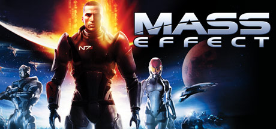

The Xbox 360 is a home video game console developed by Microsoft. As the successor to the original Xbox, it is the second console in the Xbox series. It competed with Sony's PlayStation 3 and Nintendo's Wii as part of the seventh generation of video game consoles. It was officially unveiled on MTV on May 12, 2005, with detailed launch and game information announced later that month at the 2005 Electronic Entertainment Expo.
The Xbox 360 features an online service, Xbox Live, which was expanded from its previous iteration on the original Xbox and received regular updates during the console's lifetime. Available in free and subscription-based varieties, Xbox Live allows users to: play games online; download games (through Xbox Live Arcade) and game demos; purchase and stream music, television programs, and films through the Xbox Music and Xbox Video portals; and access third-party content services through media streaming applications. In addition to online multimedia features, it allows users to stream media from local PCs. Several peripherals have been released, including wireless controllers, expanded hard drive storage, and the Kinect motion sensing camera. The release of these additional services and peripherals helped the Xbox brand grow from gaming-only to encompassing all multimedia, turning it into a hub for living-room computing entertainment.
Launched worldwide across 2005–2006, the Xbox 360 was initially in short supply in many regions, including North America and Europe. The earliest versions of the console suffered from a high failure rate, indicated by the so-called "Red Ring of Death", necessitating an extension of the device's warranty period. Microsoft released two redesigned models of the console: the Xbox 360 S in 2010, and the Xbox 360 E in 2013. Xbox 360 is the sixth-highest-selling home video game console in history, and the highest-selling console made by an American company. Although not the best-selling console of its generation, the Xbox 360 was deemed by TechRadar to be the most influential through its emphasis on digital media distribution and multiplayer gaming on Xbox Live.
The reason I got an Xbox 360
MASS EFFECT
